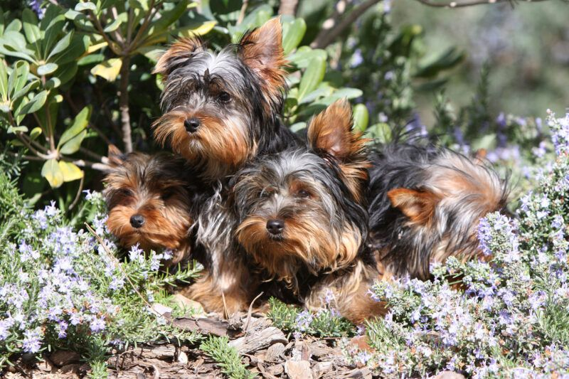
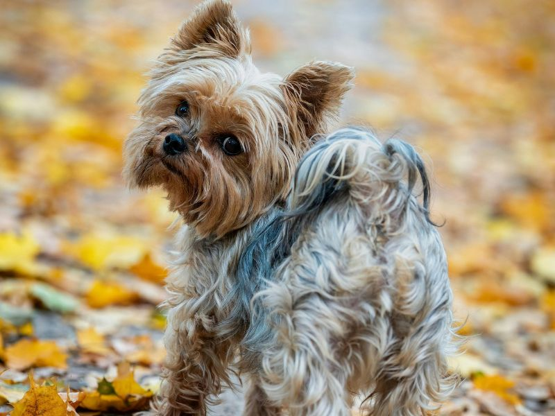
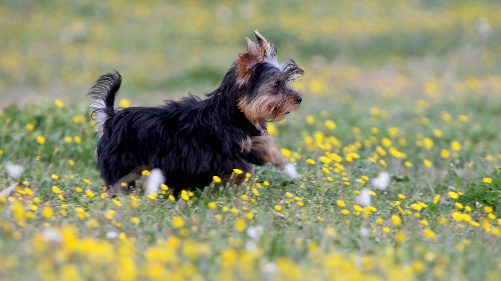

Início | Origem | Características | Cuidados
Características da raça



O Yorkshire Terrier é um cão porte miniatura e elegante, pelagem se caracteriza
por apresentar pelos
longos, lisos, finos e sedosos.
Seu tamanho faz com que se adapte bem em ambientes menores apartamentos.
Mas é importante lembrar que,
como para qualquer canino, caminhadas, brincadeiras e atividades diárias
são extremamente importantes
para a manutenção da saúde física e mental.
Características da personalidade
Energia:
Obediência:
Inteliência:
Territorialista:
Apego ao dono: